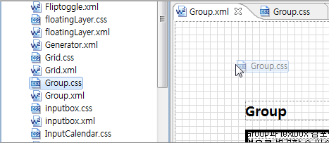

7.외부 CSS 파일 참조하기
외부 CSS를 참조할 시 주의할 점은, 현재 WebSquare XML에 참조한 외부 CSS 파일 안에서의 @import구문을 지원하고 있지 않습니다. 그러므로 CSS 파일 내의 import 구문 사용을 자제하고 개별 파일을 별도로 import 하거나 하나의 파일로 통합하여 사용 바랍니다.
WebSquare 에서 CSS 적용 순서는 페이지 최초 로딩시 WebSquare에서 기본으로 정하는 styleseet.css이 가장 먼저 적용이 됩니다. 그 이후에 사용자 작성한 참조CSS 파일을 처음 생성할 때에는 프로젝트 Project Explorer에서 추가할 프로젝트 오른쪽 클릭 -> New
-> WebSquare CSS를 선택하여 CSS 파일을 생성합니다. 생성한 CSS 파일을 XML이 참조하게끔 추가를 하려면,
<?xml version="1.0" encoding="UTF-8"?> <?xml-stylesheet href="컨텍스트루트를 포함한 경로/해당 CSS 파일" type="text/css"?> <html xmlns="http://www.w3.org/1999/xhtml" xmlns:ev="http://www.w3.org/2001/xml-events" xmlns:w2="http://www.inswave.com/websquare" xmlns:xf="http://www.w3.org/2002/xforms">
위와 같이 직접 참조하는 구문을 넣는 방법이 있습니다.
다른 방법은 CSS 파일 추가를 원하는 XML을 열고 추가하고 싶은 CSS 파일을 프로젝트 Explorer에서 Design View로 끌어 넣으면 더 수월합니다.
